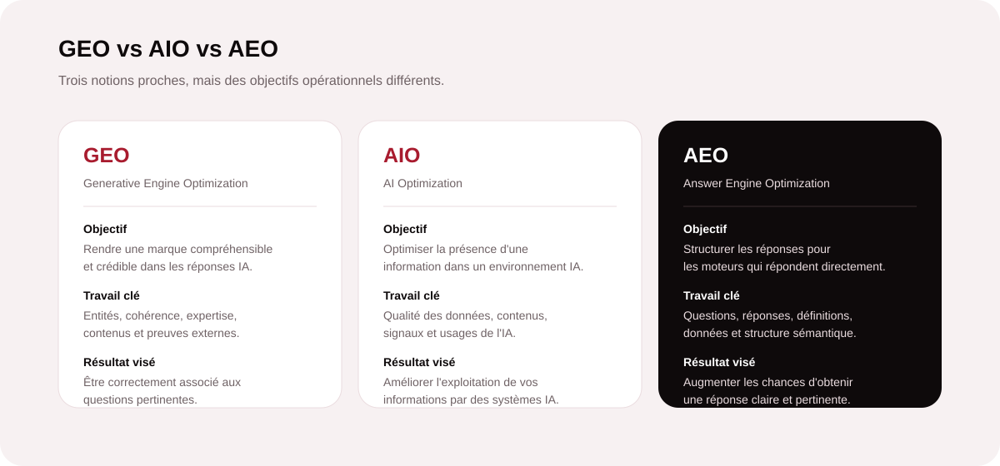

Pourquoi la recherche impose désormais plusieurs couches d’optimisation
Le SEO reste indispensable : un site techniquement accessible, des pages utiles et une autorité solide constituent toujours le socle de la visibilité organique. En revanche, le SEO seul ne couvre plus tous les usages. Les internautes formulent des questions complètes, attendent des synthèses immédiates et utilisent des assistants IA en complément des moteurs classiques.
Cette évolution fait émerger trois approches complémentaires : le GEO cherche la visibilité dans les réponses génératives, l’AEO structure l’information pour les moteurs de réponses, tandis que l’AIO utilise l’intelligence artificielle pour accélérer et améliorer le travail d’optimisation. L’enjeu n’est donc pas de remplacer le SEO, mais de bâtir un dispositif plus large.

GEO, AIO et AEO : le tableau qui clarifie les rôles
| Approche | Finalité principale | Actions prioritaires | Résultat recherché |
|---|---|---|---|
| GEO | Renforcer la présence dans les réponses générées par IA. | Profondeur sémantique, entités, preuves, citations, mentions externes. | Être compris, mentionné ou cité par les moteurs génératifs. |
| AIO | Améliorer la production et l’optimisation grâce à l’IA. | Recherche, briefs, analyse de gaps, assistance éditoriale, contrôle. | Gagner en vitesse et en capacité sans sacrifier l’exigence. |
| AEO | Fournir des réponses directement exploitables par les moteurs. | FAQ, définitions, listes, tableaux, données structurées, réponses concises. | Occuper des formats de réponse visibles et faciliter l’extraction. |
GEO : construire une marque que les moteurs génératifs peuvent comprendre
Passer du classement à la capacité d’être cité
Le Generative Engine Optimization travaille la probabilité qu’une marque, une page ou une expertise soit mobilisée dans une réponse générée. Les assistants ne se contentent pas d’ordonner dix liens : ils synthétisent plusieurs sources. Votre contenu doit donc être explicite, contextualisé, cohérent et vérifiable.
Les signaux à renforcer
Une stratégie GEO sérieuse clarifie les entités — entreprise, services, experts, zones d’intervention — puis développe des contenus qui couvrent réellement les questions d’un marché. Elle s’appuie aussi sur des signaux externes : liens pertinents, mentions de marque, références, avis et cohérence des informations publiées. Un tableau comparatif, une donnée sourcée ou une définition nette sont plus faciles à interpréter qu’un discours marketing vague.
AIO : utiliser l’IA comme levier de production, pas comme pilote automatique
Industrialiser l’analyse tout en conservant l’expertise humaine
L’AI Optimization concerne surtout la manière de travailler. L’IA peut accélérer l’exploration des sujets, la création de plans, l’identification des angles manquants, la synthèse de données ou la préparation de briefs. Elle devient un assistant de productivité, tandis que la validation humaine garantit l’exactitude, la valeur ajoutée, le ton de marque et la conformité.
Pour une entreprise, l’intérêt est concret : traiter davantage d’opportunités sans multiplier les tâches répétitives. Mais publier des textes générés en masse sans expertise crée l’effet inverse : contenus interchangeables, erreurs, faible différenciation et perte de confiance.
Votre contenu est-il prêt pour Google et les moteurs IA ?
MinoSeo analyse vos pages, vos intentions prioritaires et vos signaux de confiance pour identifier les optimisations SEO/GEO les plus rentables.
Demander un audit SEO/GEOAEO : transformer chaque page en source de réponses précises
Structurer l’information pour une lecture immédiate
L’Answer Engine Optimization vise les environnements qui extraient une réponse avant même le clic : extraits enrichis, blocs de questions, moteurs conversationnels ou synthèses de recherche. La logique consiste à répondre clairement avant de développer. Une question bien formulée suivie d’une réponse concise, puis d’une explication détaillée, facilite à la fois la lecture humaine et l’interprétation machine.
Les formats qui fonctionnent bien
FAQ utiles, définitions courtes, listes ordonnées, tableaux de comparaison, étapes, chiffres contextualisés et balisage sémantique sont particulièrement efficaces. L’objectif n’est pas de « parler à un robot », mais de supprimer l’ambiguïté. Une information structurée améliore aussi l’expérience utilisateur et peut soutenir le SEO classique.
La vraie performance vient de la combinaison des trois approches
GEO, AIO et AEO ne sont pas trois stratégies concurrentes. Elles interviennent à des moments différents d’un même processus. L’AIO aide à explorer et produire plus efficacement ; l’AEO donne une forme claire aux réponses ; le GEO renforce la compréhension, l’autorité et la capacité d’une marque à émerger dans les environnements génératifs.
- Étape 1 — Diagnostic : mesurer les positions SEO, les pages stratégiques, les questions clients et la présence de marque dans les réponses IA.
- Étape 2 — Architecture : relier pages piliers, contenus experts, FAQ et preuves afin de créer un ensemble cohérent.
- Étape 3 — Production : utiliser l’IA pour accélérer la recherche et les briefs, puis valider chaque contenu avec une expertise humaine.
- Étape 4 — Autorité : renforcer les signaux externes par un netlinking pertinent et des mentions crédibles.
- Étape 5 — Mesure : suivre trafic, positions, conversions, citations, mentions et évolution de la couverture sémantique.
Comment MinoSeo transforme ces concepts en plan d’action
Agence SEO/GEO depuis plus de 15 ans, MinoSeo privilégie une approche progressive : audit technique et sémantique, priorisation des pages à potentiel, amélioration des contenus, structuration AEO, renforcement de l’autorité et suivi de la visibilité dans les nouveaux parcours de recherche. L’objectif est d’éviter les effets de mode et de concentrer les ressources sur des actions mesurables.
Cette méthode permet d’adapter le niveau d’accompagnement à la maturité de chaque entreprise : optimisation d’un site existant, création de contenus experts, stratégie de netlinking ou construction d’une feuille de route SEO/GEO complète.
Besoin d’une feuille de route adaptée à votre marché ?
Nous pouvons hiérarchiser vos opportunités SEO, GEO et AEO selon vos objectifs commerciaux, vos ressources et votre concurrence.
Découvrir l’accompagnement SEO/GEONe choisissez pas un acronyme : organisez votre visibilité autour des usages
Le SEO ne disparaît pas ; il devient le socle d’un écosystème plus large. Le GEO travaille votre présence dans les réponses génératives, l’AEO rend vos contenus immédiatement exploitables comme réponses et l’AIO améliore l’efficacité de vos processus. Une entreprise compétitive doit donc penser simultanément accessibilité, qualité éditoriale, structure, autorité et compréhension par les systèmes IA.
La priorité reste simple : produire une information fiable qui répond mieux aux besoins réels de vos prospects. Les formats et les moteurs évoluent, mais la confiance, la clarté et la pertinence restent les actifs les plus durables.
Faites de l’AI Search un nouveau canal de visibilité
MinoSeo vous accompagne pour consolider votre SEO et préparer vos contenus aux moteurs de réponses et aux assistants génératifs.
Parler de votre projet